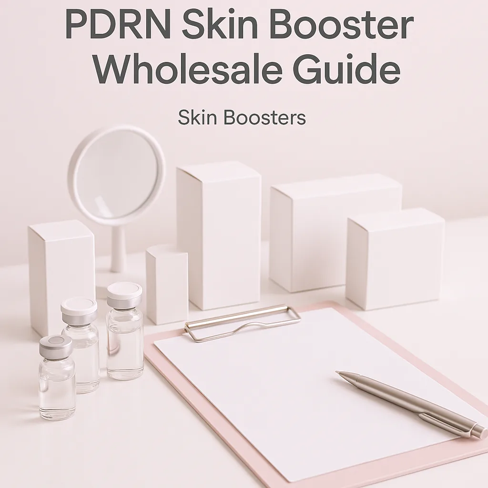
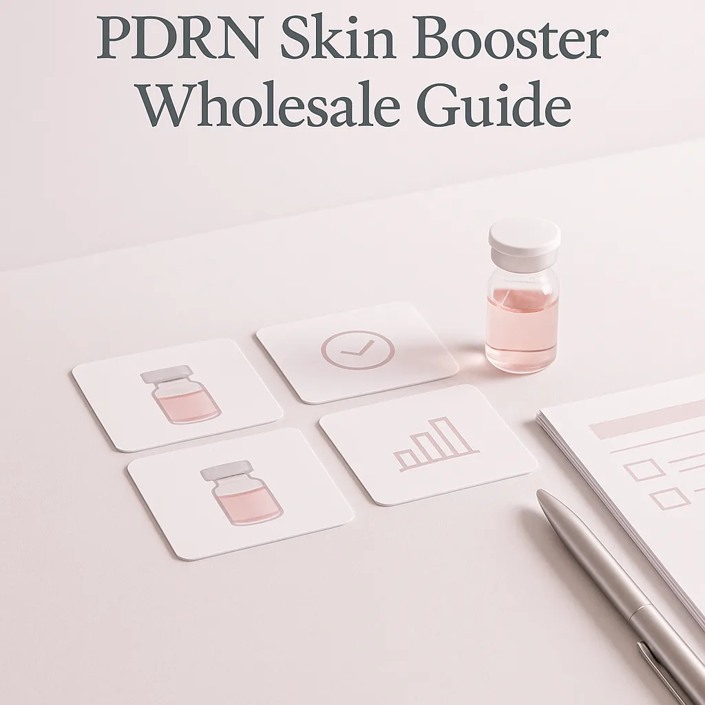
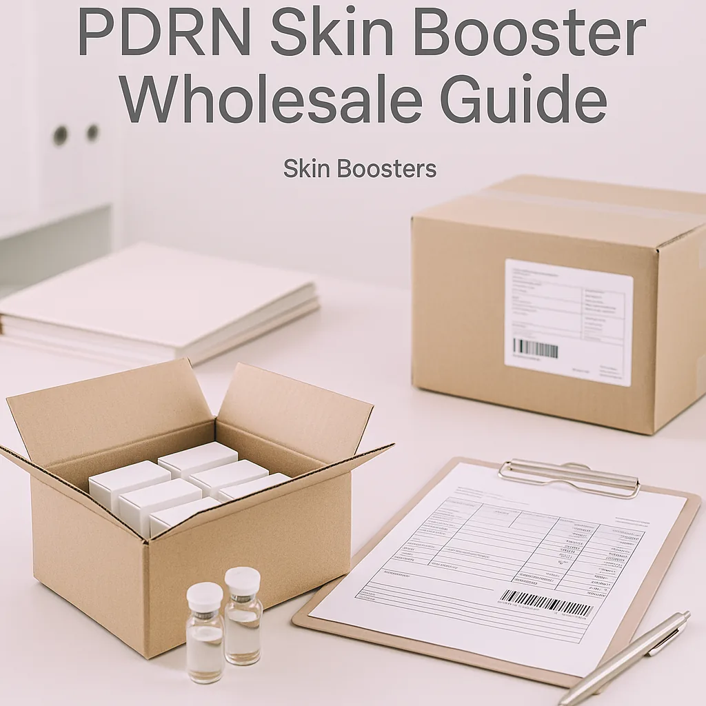

This guide provides essential insights for clinics, spas, and resellers on sourcing PDRN skin boosters wholesale, covering logistics, comparisons, and more.
As a professional buyer in the beauty and wellness industry, you face the challenge of sourcing high-quality products that meet your clients' needs. The demand for PDRN skin boosters is on the rise, and understanding how to navigate the wholesale market is crucial for your business success. This guide will help you tackle the complexities of sourcing PDRN skin boosters effectively.
Knowing where to find reliable wholesale suppliers, understanding the product specifications, and managing logistics can be daunting. This PDRN skin booster wholesale guide will provide you with the insights needed to make informed purchasing decisions, ensuring that you can meet your clients' expectations while optimizing your supply chain.
Key Takeaways
- Source from reputable suppliers to guarantee product quality and safety.
- Evaluate packaging options and batch visibility to ensure product integrity and traceability.
- Maintain clear communication with suppliers to clarify minimum order quantities (MOQ) and shipping logistics.
- Plan orders based on anticipated client demand and seasonal trends to optimize inventory levels.
- Utilize a detailed checklist to streamline the quote request process and avoid common procurement pitfalls.
What this guide covers
- Understanding PDRN skin boosters
- Identifying relevant buyers
- Comparison criteria for ordering
- Checklist for requesting quotes
- Logistics and documentation
- MOQ and reorder planning
- Frequently asked questions
What buyers should understand first

PDRN skin boosters are innovative products designed to enhance skin rejuvenation and repair. They contain polydeoxyribonucleotide, a compound that promotes cellular regeneration and skin elasticity. These boosters are increasingly popular in aesthetic treatments, making them a valuable addition to any clinic or spa's offerings. For clinics, spas, resellers, and distributors, understanding the characteristics and benefits of these products is essential for effective marketing and client education. This guide will focus on the wholesale aspect, helping you navigate the procurement process without delving into treatment protocols.
Which buyers is this most relevant for?
This guide is particularly relevant for clinics and spas looking to expand their service offerings, resellers seeking to stock high-demand products, and distributors aiming to provide comprehensive solutions to their clients. Each of these business types may have different order planning needs. For instance, clinics may require regular replenishment of stock based on client appointments, while resellers might focus on bulk purchasing to take advantage of lower prices. Understanding these scenarios will help you tailor your sourcing strategy effectively. Additionally, distributors need to consider their inventory turnover and the variety of products they offer to meet diverse client needs.
How to compare options before ordering
When considering a wholesale order of PDRN skin boosters, it’s essential to compare various options to ensure you make the best choice. Here are some practical criteria to evaluate:
- Product Type: Ensure you are sourcing the specific type of PDRN skin booster that aligns with your business needs, whether for facial rejuvenation or other applications.
- Brand Reputation: Research the brand's reputation in the market to ensure product reliability. Look for reviews and testimonials from other buyers.
- Packaging: Consider the packaging options available, as this can affect shelf life and ease of use. Look for tamper-proof packaging to ensure product safety.
- Batch and Expiry Visibility: Look for suppliers that provide clear batch and expiry information for quality assurance. This is critical for maintaining compliance and ensuring client safety.
- Supplier Communication: Assess how responsive and transparent the supplier is regarding your inquiries. Good communication can prevent misunderstandings and delays.
- Destination Requirements: Ensure the supplier can meet any specific shipping requirements for your location, including temperature control if necessary.
Buyer checklist before requesting a quote


Before reaching out to suppliers for a quote, ensure you have the following information ready:
- Desired product specifications (type, brand, etc.)
- Estimated order quantity (considering MOQ)
- Shipping destination and any specific requirements
- Preferred packaging options
- Questions about batch visibility and expiry dates
- Clarification on payment terms and delivery timelines
- Any specific regulatory requirements for your region
Shipping, packing and documentation questions
Logistics play a critical role in the procurement process. Here are some common questions to consider:
- What are the shipping options available, and how do they affect delivery times?
- What packing materials are used to ensure product safety during transit?
- What documentation will be provided with the shipment, such as invoices and certificates of authenticity?
- Are there any specific customs requirements for importing PDRN skin boosters?
- How will you handle potential delays or issues during shipping?
MOQ, quotation and reorder planning
Understanding Minimum Order Quantities (MOQ) is vital for effective planning. Different suppliers may have varying MOQs based on product type and brand. When preparing your order:
- Determine the quantities you need based on client demand and your business capacity.
- Consider any product variants you may want to stock, such as different concentrations or formulations.
- Provide detailed destination information to ensure accurate shipping quotes.
- Contact SOLA to confirm current availability and request a wholesale quotation tailored to your needs.
- Plan for reorders based on your sales forecasts and lead times from suppliers.
FAQ
What is PDRN?
PDRN stands for polydeoxyribonucleotide, a compound used in skin boosters for its regenerative properties.
How do I choose a supplier?
Look for suppliers with a strong reputation, clear communication, and positive reviews from other buyers. Verify their certifications and compliance with regulations.
What is the typical MOQ for PDRN skin boosters?
MOQs can vary by supplier, so check with each supplier for their specific requirements. It's important to align your order with your business needs.
What shipping options are available?
Shipping options will depend on the supplier and your location; inquire about available methods and costs to find the best solution for your needs.
How can I ensure product quality?
Choose reputable suppliers that provide batch visibility and clear documentation for their products. Regularly check for updates on product quality and supplier reliability.
Contact SOLA for wholesale quotation via WhatsApp.
Planning a wholesale request?
Send product names, quantities and destination for a tailored discussion.
Contact SOLA on WhatsApp →General educational content for professional buyers. Not medical, legal, regulatory or import advice.